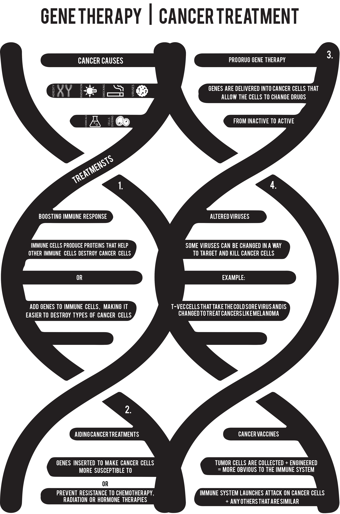

After researching all the different areas that Gene Therapy has been expanding in I decided to focus on Cancer for my 2D Study.
Since there are so many approaches for the developing treatment options, I wanted to make a visual breakdown that would make it easier for patients to take in the information.
